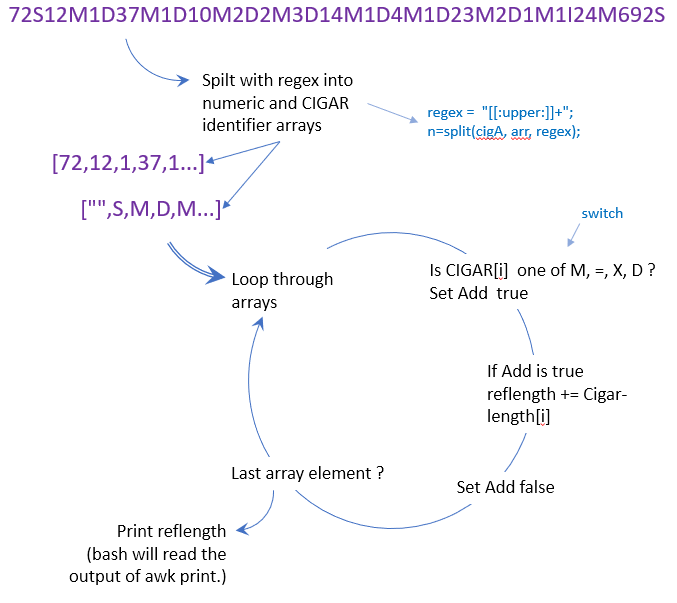
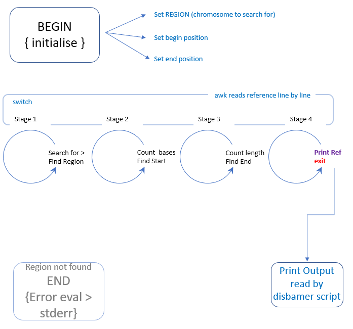
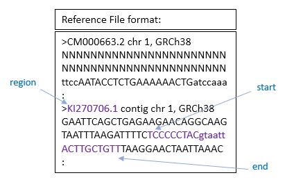
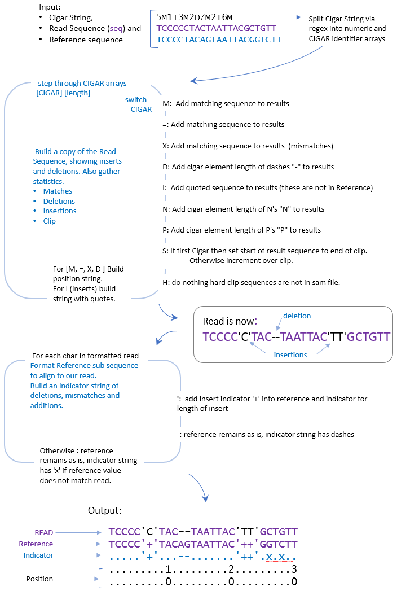

Disbamer Operation/Code explained.
For viewing a read from a bam file in the linux terminal, and its associated reference bases. How to run and sample output here https://github.com/jo-mc/disbamer1 Disbamer
1.1 Design main script ‘disbamer.sh’
Most commands are explained in detail in Techniques Section
Was a read number supplied?
|
Is samtools loaded
|
Extract Read from SAM file.
|
Get read data fields.
|
Check sequence field. Secondary alignments don’t hold sequence
|
Using CIGAR calculate length of Reference sequence required
|
Obtain reference matching sequence for read
|
Display read alongside Reference with indels marked
|
1.2 Find Reference alignment length ‘cigtoRefLen.awk’
Using CIGAR calculate length of Reference sequence required

Note: All code is in a BEGIN block, and only operates on passed variable (via –v)
1.3 Obtain reference sequence ‘getrefseq.awk’
Obtain reference matching sequence for read
 
1.4 Display output ‘viewread.awk’
Display read alongside Reference with indels marked
